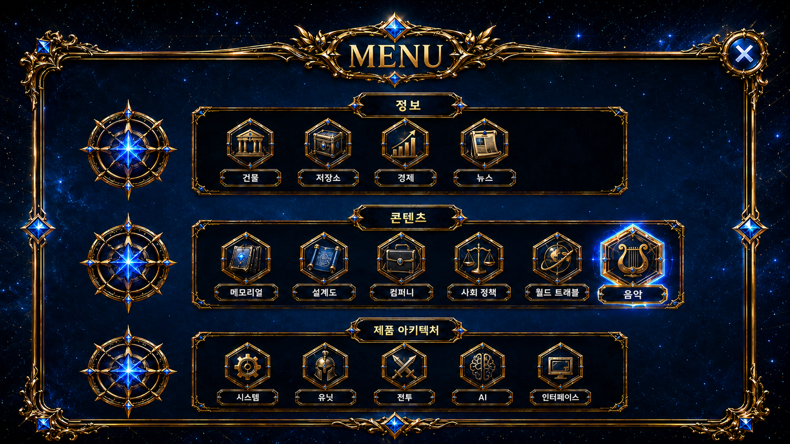
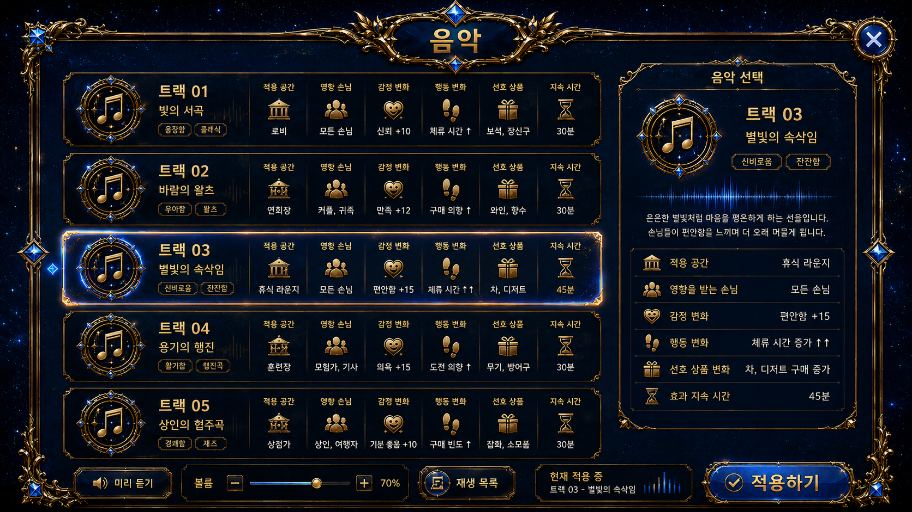
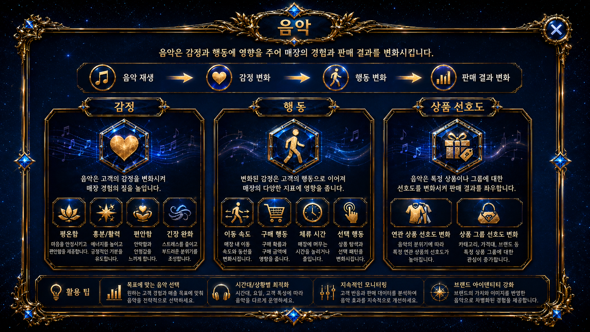
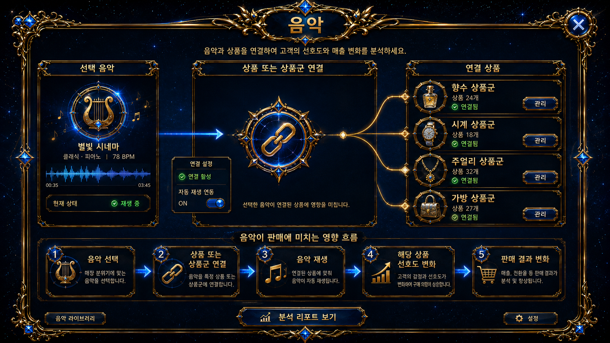
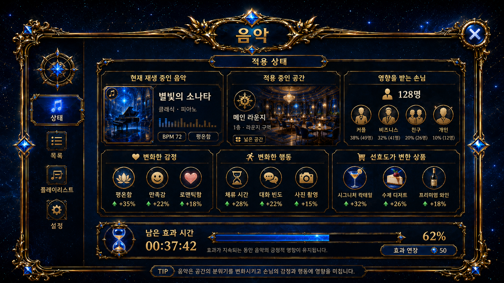

Core System
음악

진입 경로
홈
→ 코어 시스템
→ 음악음악 메뉴에서는 공간에 적용할 음악을 선택하고, 현재 적용 중인 음악 효과를 확인한다.
기본 구조
음악은 단순한 배경음이 아니라 손님의 감정, 행동, 상품 선호도에 영향을 주는 코어 시스템이다.
음악 선택
→ 공간에 적용
→ 손님의 감정 변화
→ 행동과 상품 선호도 변화
→ 판매 결과 변화
음악 선택
플레이어는 보유한 음악 중 하나를 선택해 특정 공간에 적용한다.
음악마다 다음 요소가 다를 수 있다.
- 적용 공간
- 영향을 받는 손님
- 감정 변화
- 행동 변화
- 선호 상품 변화
- 효과 지속 시간

음악 효과
음악은 손님에게 다음과 같은 영향을 줄 수 있다.
감정
음악에 따라 손님의 기분과 감정 상태가 달라진다.
행동
감정 변화에 따라 손님의 이동, 구매, 체류, 선택 행동이 달라진다.
상품 선호도
음악의 특성에 따라 특정 상품이나 상품군에 대한 선호도가 변한다.

상품과의 연결
음악은 특정 상품이나 상품군과 연결할 수 있다.
연결된 음악이 재생되면 해당 상품의 선호도와 판매 반응이 달라진다.
음악 선택
→ 상품 또는 상품군 연결
→ 음악 재생
→ 해당 상품 선호도 변화
→ 판매 결과 변화
적용 상태
음악 화면에서는 다음 정보를 확인한다.
메뉴 설명
음악
공간에 적용할 음악을 선택합니다. 음악의 특성에 따라 손님의 감정, 행동, 상품 선호도가 달라집니다.